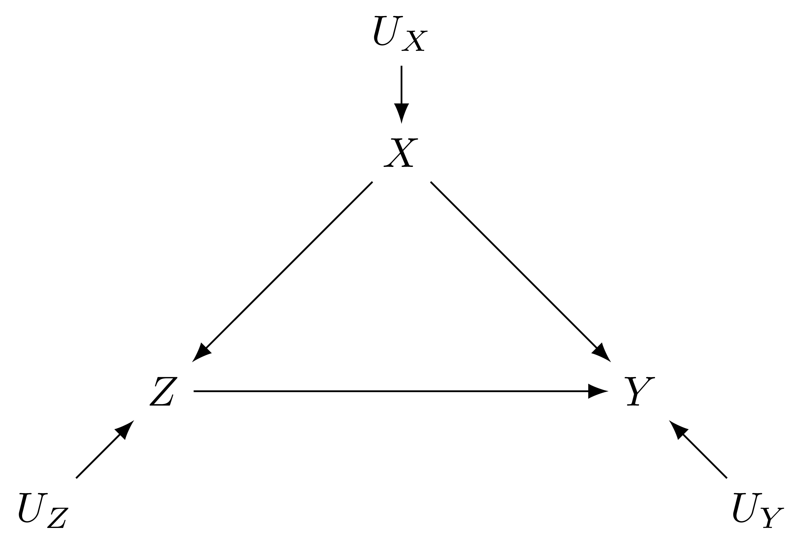
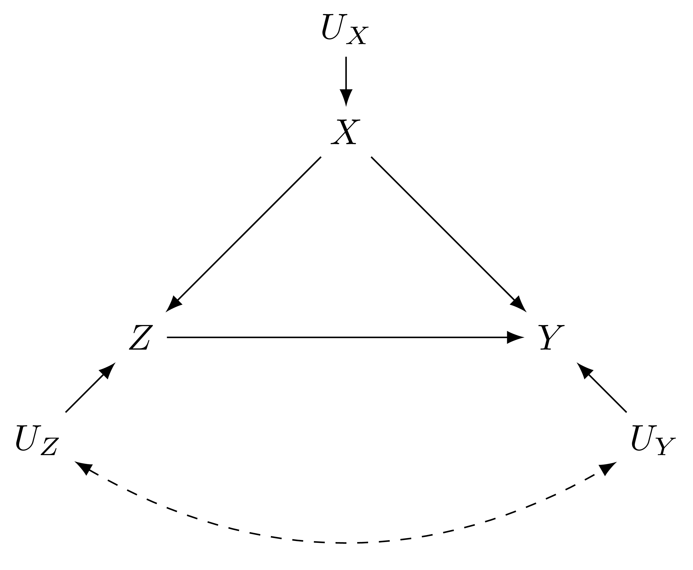
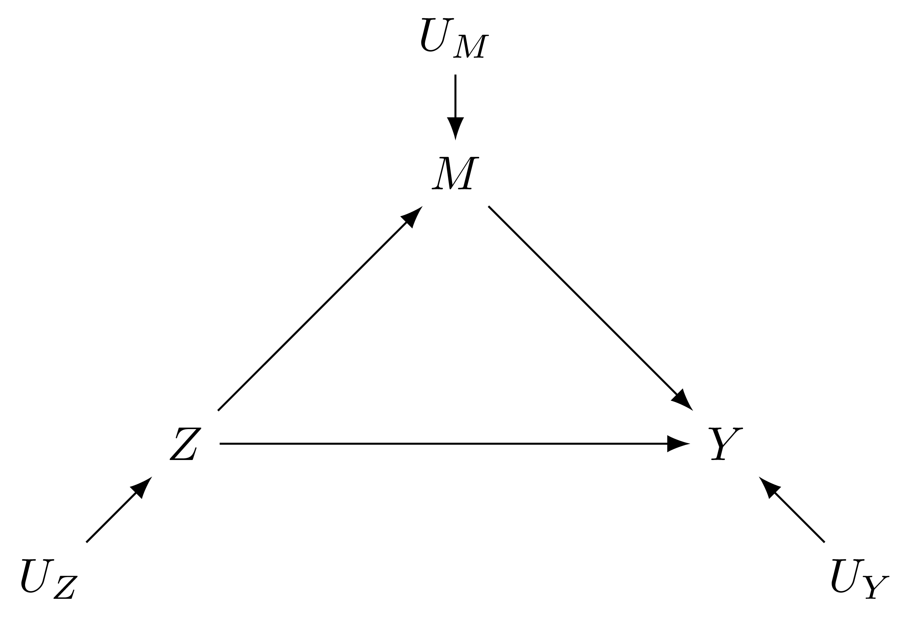

17.1 Selection on observables
(matching and regression etc.)
17.1.1 Classic Confounding
- We want to know the effect of Z on Y, but it’s confounded by X
- DIM is biased, OLS is unbiased because we happen to get the functional forms right enough.

Figure 17.1: DAG with one observed confounder
design_1 <-
declare_population(N = 100,
U_z = rnorm(N),
U_x = rnorm(N),
U_y = rnorm(N),
X = U_x) +
declare_potential_outcomes(Y ~ 0.5*Z + X + U_y) +
declare_estimand(ATE = mean(Y_Z_1 - Y_Z_0)) +
declare_assignment(prob_unit = pnorm(U_z + U_x), simple = TRUE) +
declare_estimator(Y ~ Z, estimand = "ATE", label = "DIM") +
declare_estimator(Y ~ Z + X, model = lm, estimand = "ATE", label = "OLS")##
## Research design diagnosis based on 100 simulations. Diagnosand estimates with bootstrapped standard errors in parentheses (20 replicates).
##
## Design Label Estimand Label Estimator Label Term N Sims Bias RMSE Power
## design_1 ATE DIM Z 100 0.96 0.99 1.00
## (0.02) (0.02) (0.00)
## design_1 ATE OLS Z 100 0.01 0.23 0.61
## (0.02) (0.01) (0.03)
## Coverage Mean Estimate SD Estimate Mean Se Type S Rate Mean Estimand
## 0.05 1.46 0.27 0.27 0.00 0.50
## (0.02) (0.02) (0.01) (0.00) (0.00) (0.00)
## 0.96 0.51 0.23 0.23 0.00 0.50
## (0.02) (0.02) (0.01) (0.00) (0.00) (0.00)17.1.2 What if the functional form is wrong?
- Oh no, the functional form is wrong, so even though we’re controlling for all confounders, there’s still bias.
- Solution: matching might do a better job since it’s sort of a “nonparametric” form of covariate control.
design_2 <-
declare_population(N = 100,
U_z = rnorm(N),
U_x = rnorm(N),
U_y = rnorm(N),
X = U_x) +
declare_potential_outcomes(Y ~ 0.5*Z + X + X^2 + U_y) +
declare_estimand(ATE = mean(Y_Z_1 - Y_Z_0)) +
declare_assignment(prob_unit = pnorm(U_z + U_x + U_x^2), simple = TRUE) +
declare_estimator(Y ~ Z, estimand = "ATE", label = "DIM") +
declare_estimator(Y ~ Z + X, model = lm, estimand = "ATE", label = "OLS")##
## Research design diagnosis based on 100 simulations. Diagnosand estimates with bootstrapped standard errors in parentheses (20 replicates).
##
## Design Label Estimand Label Estimator Label Term N Sims Bias RMSE Power
## design_2 ATE DIM Z 100 1.30 1.34 1.00
## (0.03) (0.04) (0.00)
## design_2 ATE OLS Z 100 0.75 0.84 0.91
## (0.02) (0.03) (0.03)
## Coverage Mean Estimate SD Estimate Mean Se Type S Rate Mean Estimand
## 0.03 1.80 0.35 0.33 0.00 0.50
## (0.02) (0.03) (0.03) (0.00) (0.00) (0.00)
## 0.44 1.25 0.38 0.36 0.00 0.50
## (0.04) (0.02) (0.04) (0.01) (0.00) (0.00)17.1.3 What if you have unobserved confounding?

Figure 17.2: DAG with unobserved confounding
design_3 <-
declare_population(N = 100,
U_z = rnorm(N),
U_x = rnorm(N),
U_y = correlate(rnorm, given = U_z, rho = 0.9),
X = U_x) +
declare_potential_outcomes(Y ~ 0.5*Z + X + U_y) +
declare_estimand(ATE = mean(Y_Z_1 - Y_Z_0)) +
declare_assignment(prob_unit = pnorm(U_z + U_x), simple = TRUE) +
declare_estimator(Y ~ Z, estimand = "ATE", label = "DIM") +
declare_estimator(Y ~ Z + X, model = lm, estimand = "ATE", label = "OLS")##
## Research design diagnosis based on 100 simulations. Diagnosand estimates with bootstrapped standard errors in parentheses (20 replicates).
##
## Design Label Estimand Label Estimator Label Term N Sims Bias RMSE Power
## design_3 ATE DIM Z 100 1.73 1.74 1.00
## (0.02) (0.02) (0.00)
## design_3 ATE OLS Z 100 1.02 1.03 1.00
## (0.02) (0.02) (0.00)
## Coverage Mean Estimate SD Estimate Mean Se Type S Rate Mean Estimand
## 0.00 2.23 0.20 0.22 0.00 0.50
## (0.00) (0.02) (0.01) (0.00) (0.00) (0.00)
## 0.00 1.52 0.16 0.19 0.00 0.50
## (0.00) (0.02) (0.01) (0.00) (0.00) (0.00)17.1.4 What if the observed covariate is post-treatment?

Figure 17.3: DAG with one observed mediator
design_4 <-
declare_population(N = 100,
U_z = rnorm(N),
U_m = rnorm(N),
U_y = rnorm(N)) +
declare_potential_outcomes(M ~ 0.5*Z + U_m) +
declare_potential_outcomes(Y ~ 0.5*Z + (0.5*Z + U_m) + U_y) +
declare_assignment(prob_unit = pnorm(U_z), simple = TRUE) +
declare_reveal(c(M, Y), Z) +
declare_estimand(ATE = mean(Y_Z_1 - Y_Z_0)) +
declare_estimator(Y ~ Z, estimand = "ATE", label = "DIM") +
declare_estimator(Y ~ Z + M, model = lm, estimand = "ATE", label = "OLS")##
## Research design diagnosis based on 100 simulations. Diagnosand estimates with bootstrapped standard errors in parentheses (20 replicates).
##
## Design Label Estimand Label Estimator Label Term N Sims Bias RMSE Power
## design_4 ATE DIM Z 100 0.04 0.29 0.97
## (0.03) (0.02) (0.02)
## design_4 ATE OLS Z 100 -0.49 0.54 0.65
## (0.02) (0.02) (0.06)
## Coverage Mean Estimate SD Estimate Mean Se Type S Rate Mean Estimand
## 0.91 1.04 0.29 0.28 0.00 1.00
## (0.02) (0.03) (0.02) (0.00) (0.00) (0.00)
## 0.37 0.51 0.23 0.21 0.00 1.00
## (0.04) (0.02) (0.02) (0.00) (0.00) (0.00)